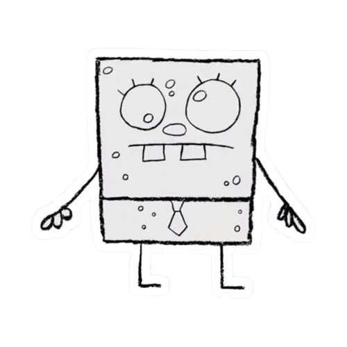

André Fonseca

Summary
An ambitious and driven individual that put great emphasis on customer
service, passionate about providing world class service & hospitality to guests & clients
alike with Tourism & Hospitality Education.
Education
Escola Secundaria Monte da Caparica, Almada
(Portugal)
- English B2
- German
- EQF Level 4
Professional Experience
- The Standard London - London, UK - 2022-03 to Present - Front Desk Agent
- Amazon Warehouse - London, UK - 2020-10 to 2021-12 - Warehouse Operative
- The Standard London - London, UK - 2019-11 to 2020-09 - Bell & Door Assistant
- Jumeirah Carlton Tower Hotel - London, UK, 2017-06 to 2019-09 - Page Person
- Travelodge Finchley - London, UK, 2017-02 to 2017-05 - Reception and Bar Café Team Member
Skills
- Excelent Customer Service skills
- Good command of MS Office
- Good interpersonal skills
Other